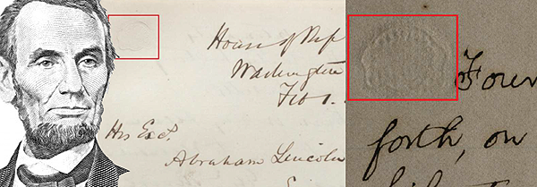
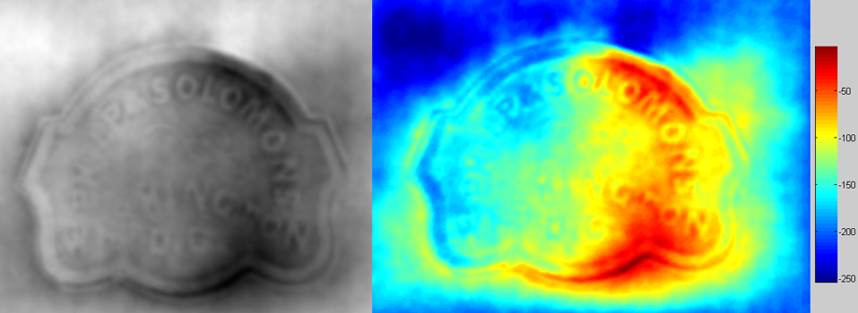

GAINESVILLE, Fla.
February 17, 2014.
Have you wondered how ancient Greek and Latin inscriptions may relate to Abraham Lincoln?
Conservation experts, digital collection specialists, digital epigraphy scholars and computer scientists from the University of Florida, Cornell University and the Library of Congress have digitized in 3D historical documents of Abraham Lincoln. More specifically, the Cornell University's copy of Abraham Lincoln's Gettysburg Address has an embossed anaglyph on the top left of the front page of the document1. A similar embossment can also be found on a letter from T. D. Eliot to Abraham Lincoln dated on February 1, 1864, currently located in the manuscript division of the Library of Congress.

The study of various properties and characteristics of the paper from historical documents, including material properties and watermarks, may reveal significant information that can allow scholars to trace the history of the document as far as the stationary that provided the raw paper material. Michele Hamill, a Paper and Photograph Conservator at Cornell University, has studied in detail the Cornell University's copy of Gettysburg address and traced the source of its paper to Philp & Solomons, Washington D.C. stationary1,2.
Paper embossments can be effectively digitized and analyzed in 3D using the same tools that the Digital Epigraphy and Archaeology group has developed for reconstructing ancient Greek and Latin inscriptions3. "A paper embossment is no different than an epigraphic squeeze or ektypon, which is a paper cast of an inscription" according to Dr. Bozia, Associate Director of the Digital Epigraphy and Archaeology project.

The 3D digital collection that was created in this digitization project can be accessed on-line in this link through the interface of the Digital Epigraphy Toolbox4. These historical documents were digitized using bi-directional and quad-directional flatbed scanning3 performed by Rhea Garen from the Institute for Digital Collections, Cornell University, and Michelle A. Krowl from the Manuscript Division, Library of Congress.
Below you can find an example of an embedded 3D artifact from the digitized collection. Use touch gestures or mouse movements to interact with the exhibit. You can rotate, zoom, relight and view in full screen information about this embossment.
This important historical evidence can now be easily accessed and studied by scholars using this on-line viewer. One of the advantages of the Digital Epigraphy Toolbox viewer is that it can be easily embedded into websites or other databases by using the following HTML tag:
The above HTML tag corresponds to the PHILPS & SOLOMONS embossment from the letter of T. D. Eliot to Abraham Lincoln, Library of Congress. You can find the corresponding embed-tag of other exhibits within the information provided in their records in the Digital Epigraphy Toolbox4.
The DEA editorial team
References:
1. M. Hamill, Paper Matters: Preserving Cornell’s Gettysburg Address, blogs.cornell.edu/rememberinggettysburg.
2. Solomons Adolphus Simeon, www.jewishencyclopedia.com.
3. A. Barmpoutis, E. Bozia, R. S. Wagman, "A novel framework for 3D reconstruction and analysis of ancient inscriptions", Journal of Machine Vision and Applications
2010, Vol. 21(6), pp. 989-998. PDF
4. Digital Epigraphy Toolbox, www.digitalepigraphy.org/toolbox.
Funded in part by the NEH grant HD-51214-11.